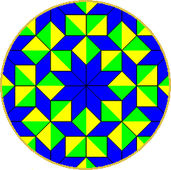

❒ Χάρτης
❒ Ευρετήριο
Ένα καλωσόρισμα

Χωρὶς τὴ μαθηματικὴ τάξη, δὲν στέκει τίποτε: Οὔτε οὐρανὸς ἔναστρος, οὔτε ρόδο. Προπαντὸς ἕνα ποίημα. Κι εὐτυχῶς ὅτι μ᾿ ἔκανε ἡ μοῖρα μου γνώστη τῶν μουσικῶν ἀριθμῶν ὅτι κρέμασε μίαν ἀχτίνα ἐπὶ πλέον τὸ ἄστρο τῆς ἡμέρας στὴν ὅρασή μου καὶ κάνοντας τὰ γόνατά μου τραπέζι ἐργάζομαι, ὡς νά ῾ταν νὰ φτιάξω ἕναν ἔναστρο οὐρανό, ἢ ἕνα ρόδο.
Νικηφόρος Βρεττάκος.
Η σφαίρα του Riemann τοπολογικά
Ως σφαίρα του Riemann ορίζουμε το επεκταμένο μιγαδικό επίπεδο \(\hat{\mathbb{C}} := \mathbb{C} \cup \{\infty\}\), όπου το "\(\infty\)" αντιπροσωπεύει το άπειρο. Πρακτικά, κανείς μπορεί να φαντάζεται το επεκταμένο μιγαδικό επίπεδο ως σφαίρα, καθώς τοπολογικά είναι η \(2-\)σφαίρα: $$\mathbb{S}^2 = \big\{(x,y,z) \in \mathbb{R}^3 ~|~ x^2+y^2+z^2 = 1\big\}$$ Πράγματι, αυτό κανείς μπορεί να το δει μέσω της συνήθους στερεογραφικής προβολής - η στερεογραφική προβολή \(σ: \mathbb{S}^2 \to [\mathbb{R}^2 \times \{0\}] \cup \{\infty\} \approx \mathbb{R}^2 \cup \{\infty\} =: \mathbb{C}\) είναι αμφιμονοσήμαντη, συνεχής και αμφισυνεχής.
Έστω \(Ν\) ο βόρειος πόλος της σφαίρας (δηλαδή \(Ν = (0,0,1)\)). Εάν \(B\) είναι ένα σημείο \(Β \in \mathbb{S}^2\backslash\{N\}\), η στερεoγραφική προβολή \(σ\) ορίζεται σε κάθε τέτοιο \(Β\) ως: $$σ(Β) = \underleftrightarrow{NB} \cap^* [\mathbb{R}^2 \times \{0\}]$$ και στο \(Ν\), \(σ(Ν) = \infty\), όπου \(\underleftrightarrow{NB}\) είναι η σημειοσειρά της ευθείας που διέρχεται από τα \(Ν\) και \(Β\), και \(\underleftrightarrow{NB} \cap^* [\mathbb{R}^2 \times \{0\}]\) το σημείο τομής της ευθείας \(\underleftrightarrow{NB}\) με το επίπεδο \(\mathbb{R}^2 \times \{0\}\).
Για να μελετήσουμε εν συνεχεία τις ιδιότητες του αμφιμονοσημάντου, της συνέχειας και της αμφισυνέχειας της \(σ\), θα αναζητήσουμε έναν κλειστό τύπο γι' αυτήν. Έστω λοιπόν \(B = (x,y,z) \in \mathbb{S}^2\backslash\{N\}\), \(σ(Β) = \underleftrightarrow{NB} \cap^* [\mathbb{R}^2 \times \{0\}]\) και \(Κ_ΒΒ\) το κάθετο ευθύγραμμο τμήμα προς την διάμετρο που διέρχεται από το \(Ν\). Παρατηρούμε ότι τα ορθογώνια τρίγωνα \(\overset{\triangle}{Κ_ΒΒΝ}\) και \(\overset{\triangle}{Οσ(Β)Ν}\) είναι μεταξύ τους όμοια, οπότε οι ακόλουθες αναλογίες αληθεύουν: $$\dfrac{||K_BB||}{||K_BN||} = \dfrac{||σ(Β)||}{||ON||} \Rightarrow ||σ(Β)|| = \dfrac{\sqrt{x^2+y^2}}{1-z}$$ απ' όπου το μήκος του \(σ(Β)\) προσδιορίζεται. Η διεύθυνσή του δε είναι γνωστή, οπότε ουσιαστικά το προηγούμενο αρκεί ώστε να προσδιοριστεί πλήρως: $$σ(Β) = \dfrac{\sqrt{x^2+y^2}}{1-z} \cdot \dfrac{1}{\sqrt{x^2+y^2}} (x,y,0) = \dfrac{1}{1-z}(x,y,0)$$ Η τιμή \(σ(Ν)\) έχει οριστεί άπειρη, οπότε έτσι έχουμε βρει κλειστό τύπο για την \(σ\). Σε αυτό το σημείο κανείς παρατηρεί ότι η συνολοθεωρητική αντίστροφη της \(σ\) είναι η απεικόνιση η οποία ορίζεται για κάθε \(Τ = (κ,λ,0) \in \mathbb{R}^2 \times \{0\}\): $$σ^{-1}(T) = \left(\dfrac{κ}{\sqrt{κ^2+λ^2}}, \dfrac{λ}{\sqrt{κ^2+λ^2}}, 1-\dfrac{1}{\sqrt{κ^2+λ^2}}\right) ~\&~ σ^{-1}(\infty) = N$$ και επίσης οι \(σ\), \(σ^{-1}\) είναι συνεχείς, εξαιρώντας τα "ιδιάζοντα" σημεία \(Ν\), \(\infty\). Δείχνοντας τη συνέχεια και σε αυτά, αποδεικνύουμε την τοπολογική σχέση: $$\mathbb{S}^2 \approx [\mathbb{R}^2 \times \{0\}] \cup \{\infty\} \approx \mathbb{R}^2 \cup \{\infty\} =: \mathbb{C} \cup \{\infty\} \Rightarrow \mathbb{S}^2 \approx \hat{\mathbb{C}}$$ Έστω \((Β_n)_{n \in \mathbb{N}},~ Β_n = (x_n, y_n, z_n)\) μια ακολουθία στη σφαίρα \(\mathbb{S}^2\), η οποία συγκλίνει προς το \(Ν\). Καθώς \(Β_n \to N\), θα πρέπει \(z_n \to 1\), οπότε \(σ(Β_n) \to \infty = σ(Ν)\) (η \(σ\) αποδεικνύεται συνεχής και στο \(Ν\)). Επιπλέον, εάν \((Τ_n)_{n \in \mathbb{N}},~ T_n = (κ_n, λ_n, 0)\) είναι μία ακολουθία του \(\mathbb{R}^2 \times \{0\}\) η οποία συγκλίνει στο \(\infty\), καθώς \(Τ_n \to \infty\) θα πρέπει \(\sqrt{κ_n^2+λ_n^2} \to \infty\). Κατ' επέκταση, \(σ^{-1}(Τ_n) \to (0,0,1) = Ν = σ^{-1}(\infty)\) (η \(σ^{-1}\) αποδεικνύεται συνεχής και στο \(\infty\)). Με αυτά αποδεικνύεται η εν λόγω σχέση.